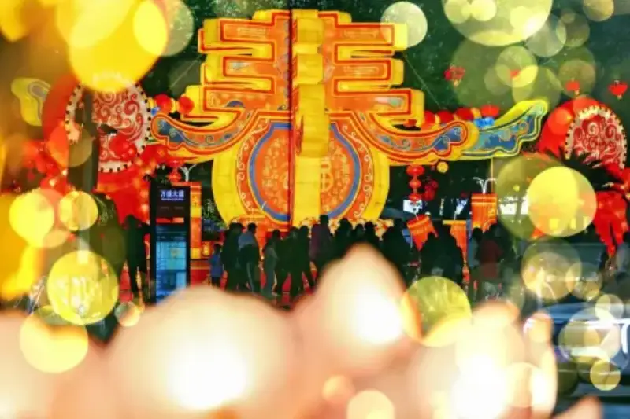
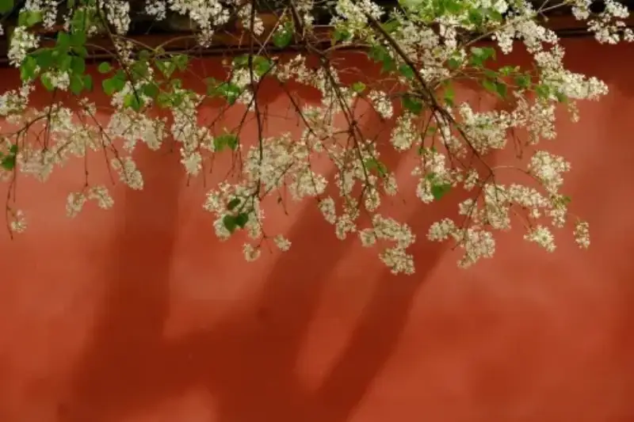

With AI developing fast, AI-generated content is remarkably efficient. But real, authoritative news images with human value are still an irreplaceable, scarce resource. For news media, good text is not enough. Images that are both attractive and timely are also key to catching the audience's eye.
Visual China introduces three long-term theme categories for photographers, to add color to all kinds of news coverage.
Citizen activities
Citizen activities are a key part of news images. They cover many scenes in city life, and these photos add liveliness and realism to news reports.
Holidays:
The lanterns of the Spring Festival temple fair, street parades on National Day, and moon-gazing events at Mid-Autumn Festival. These ritual-filled moments are a focus of media coverage, and photographers should capture the elements unique to each festival.

January 20, 2025, Chongqing. The streets of Wansheng Economic Development Zone are dressed in festive red lanterns for the New Year. Light and shadow keep crossing, and lamps blend with the scene. Photo by Wang Luzhou.
Everyday life:
The small, ordinary moments of daily life are the most real window onto people's lives. When you shoot, focus on detail and emotion, and find topics tied to current events, so the images tell a story.
Cultural and sports activities:
The excitement of citizen life lies in its wide range of cultural and sports events. Street basketball games, arts events, and digital art shows all bring energy to the city.
Environment and nature
Nature and environment subjects show how people and nature coexist, and they can highlight issues such as the environment and climate. These images are often used in coverage of conservation, travel, and geography.
Plants and animals
Plants and animals are key parts of the ecosystem. They carry the reproduction and continuation of life and guard the ecological balance. The key to this theme is to draw out the close link between living things and their habitat, and to show their survival stories.

April 7, 2024, Beijing. Flowers bloom at the Forbidden City, and spring fills the whole palace. Photo by Wang Yuhao.
Weather and climate
Seasonal change and extreme weather affect how people across the country live and work, and they are a steady subject for media. Beyond that, you can also cover the response of local governments and society, and record the stories around you with the camera.
Ecological issues
Ecological issues center on the parts of an ecosystem. Drawing on the traits of different habitats, they show the actions and results of conservation. This theme needs both aesthetic value and social meaning, and it should convey the idea of sustainable development.
Human interest events
Human-interest themes show the lifestyles and traditions of people in different regions and cultures. This content is often used in coverage of culture, history, and society.
Festivals and folk customs
Folk customs are a major part of cultural coverage. Photographers need to go deep into the scene and capture festival-specific activities, ethnic costumes, and the real expressions of those taking part.
Craft and production skills
The passing-on and renewal of craft skills draws wide attention. Traditional skills, refined over time, hold the wisdom of past generations. Modern skills, built on advanced technology, drive the development of the age. Images of these crafts are a record of heritage and a vivid portrait of changing times.
Urban and rural change
Smart upgrades in city districts, the results of new rural development after revitalization, and the state of traditional villages all record the course of the times and show the results of urban and rural growth.
Beyond these three categories, which contributors should follow over the long term, the economy also holds rich reporting value. We look forward to your submissions.